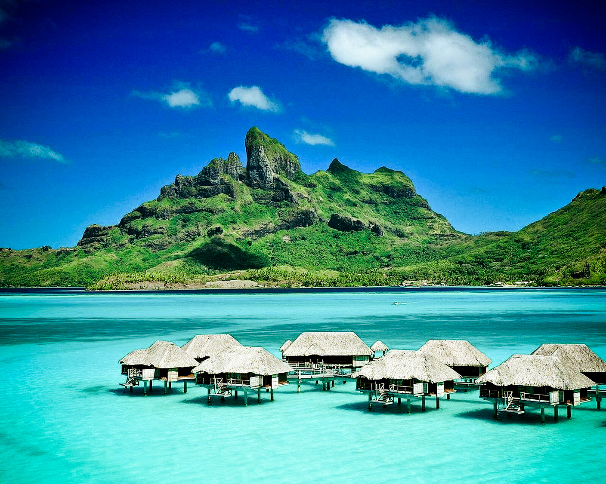

Tourism in Mauritius is one of the most sought after tourist areas in the world. Mauritius is an island in the Indian Ocean near Madagascar. Travel to this island requires a visa to enter some countries. Tourism on this island is characterized by the presence of many natural attractions, from beaches and tropical forests. Also, do not forget the mild climate, as it is located in the Indian Ocean exactly 2000 km fromthe shores of the African continent near Madagascar. Mauritius will captivate you, lift your soul and make you feel like one of the chosen few. Every visitor is entitled to personal attention. Every encounter is an opportunity to discover friendly faces. Behind every smile lies the promise of a unique vacation. The contrast of colours and flavours makes the island an oasis of peace and tranquility, nestled in the turquoise sea. Auritius, a melting pot of past and present seamlessly fused, offers an essential aesthetic that makes one want to return to its shores again and again. May your time with us remain in your memory forever.